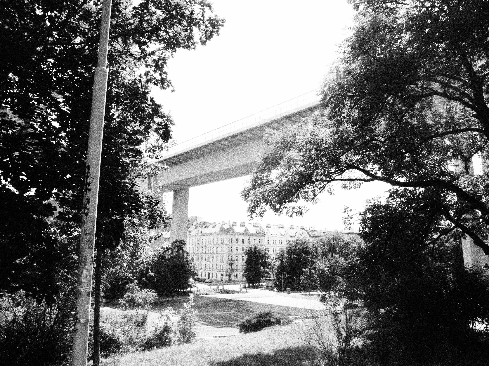

Pre skúmanie fenoménu hlukového znečistenia je však na mieste vymedziť hluk samotný voči ostatným prvkom, ktoré sú súčasťou nášho akustického prostredia. V tomto prípade by sa dalo začať tichom, kedy je však otázne či môžeme ticho považovať za samostatný prvok zvukovej krajiny alebo nám skôr udáva iba jej charakter v konkrétnom momente. Ak teda vieme, že absolútne ticho je len akýsi imaginárny (a z časti utopický) koncept, ako je potom možné, že vieme rozlíšiť rozdiel medzi hlukom a tichom? Aký je najvhodnejší spôsob definovania ich vzájomného vzťahu a vzťahu k okolitému prostrediu? Je tento vzťah čisto založený len na fyzikálnych veličinách, ktoré nám udávajú hlasitosť a silu zvuku? S súvislosti so skúmaním prístupov k zvukovému znečisteniu nám Shafer načrtá dva typy legislatív, ktoré sa touto problematikou zaoberajú – kvalitatívna a kvantitatívna. Práve kvantitatívna je založená na nastavení akýchsi noriem alebo limitov určujúcich koľko decibelov prekračuje hranicu hluku. Takýto prístup však vo veľa prípadoch nemá úplne konštruktívne východisko, nakoľko nie všetky hlasné zvuky sú vnímané ako hluk. Podobná situácia bola uvedená aj v publikácii Nová zvuková krajina, kde sa názory Shaferových študentov na hluk značne rozchádzali – pre niekoho bol hluk skladba od Edgara Varésa, niekto zas nepovažoval za hluk hučanie motora motorky. Pokiaľ by sme zvolili definíciu hluku podľa Helmholtza, ako akéhokoľvek zvuku, ktorý je neperiodický, tóny, ktoré by boli periodické by automaticky spadali do kategórie hudobných tónov. Tým pádom všetky periodické tóny bez ohľadu na to, či sú rušivé alebo hlasité zvuky by boli považované za hudobné a nie hluk. Vráťme sa teda ku tichu - jedno zaujímavé pozorovanie ponúka dvojica slov – silence a quiet, ktoré sú v podstate synonymá, avšak nie tak úplne. Zatiaľ čo slovo quiet označuje okolité prostredie ako pomerne tiché, pokojné s veľmi malým resp. minimálnym množstvom hluku alebo šumu, silence označuje prostredie, ktoré nie je rušené žiadnym hlukom/šumom resp. zvukom. Takéto sémantické pozorovanie je však v našom jazyku zavádzajúce a v kontexte významu ticha nám neposkytuje žiadne odpovede. Ak by sme však skúsili definovať hluk ako niečo, čo nám narúša integritu ticha a pokoja, aj napriek skutočnosti, že hluk je súčasťou nášho akustického prostredia, možno by sme sa vedeli posunúť o menší krok vpred. Vychádzajúc z manifestu L’arte dei rumori (Umenie hluku), jeho autor, futurista Luigi Russolo tvrdí, že práve stroj je zodpovedný pre formovanie nových hlukov a následnú zmenu v našom hudobnom vnímaní. Russolo hluk takmer idealizoval a paradoxne, až o storočie neskôr, začali nielen umelci a hudobníci nadväzovať na jeho tendencie. Ak teda vychádzame z tvrdenia, že hluk je nežiadúci zvukový signál, vytváraný strojom, dosiahli by sme odobratím strojov v súčasnej technologickej spoločnosti ticho? Z časti áno, ale vopred vieme, že to ticho nikdy nebude absolútne. Každopádne so zohľadnením súčasných podmienok je pravdepodobne takáto úvaha dostačujúca, nakoľko ticho sa nám stále vzďaľuje čoraz viac. Aj z tohto dôvodu je dôležité (a pre ďalšie generácie nevyhnutné) tieto pojmy rekontextualizovať a venovať sa im – či už z hudobného, umeleckého alebo ekologického hľadiska. Tak ako sa mení zvuková krajina okolo nás, rovnakými premenami prechádza aj to ako ju vnímame. A práve ticho, ktoré malo pred industrializáciou veľký význam, dnes už má iba symbolický avšak spoločnosť má potrebu ho naďalej vyhľadávať a vytvárať nakoľko nám poskytuje útočisko pred nástrahami súčasného hlučného sveta. Ticho nám ponúka priestor pre nielen fyzický odpočinok, ale takisto aj pre mentálnu a spirituálnu vyrovnanosť. Nie je náhoda, že práve ticho je kľúčovým komponentom rôznych svetových náboženstiev a, že obrady a ceremónie prebiehajú v relatívnom tichu. napr. meditácií v budhizme alebo adorácia v kresťanstve. V taoizme zas ticho odkazuje na akúsi pokojnú nehybnosť, v ktorom učeň naberá svoju vnútornú silu. Shafer však vníma súvislosti ako s pozitívnym, tak aj negatívnym vnímaním ticha v súčasnej spoločnosti. Moderný človek sa ticha obáva, nakoľko pre neho predstavuje akúsi priepasť, ktorú keď zvukom nezaplní on, učiní tak niekto iný alebo niečo iné.
 Ticho a hluk ako dva takpovediac opozitné prvky si určite zaslúžia viac pozornosti, a to nielen v teoretickej rovine, ale aj tej praktickej, kedy by sa uviedli do ekologickej alebo umeleckej praxe konkrétne stratégie, ktoré by nielen upozorňovali na nástrahy súčasného hlučného sveta, ale zaslúžili sa aj na zmene súčasného prístupu k tejto problematike. Existuje veľa výskumov, ktoré vedia podložiť tvrdenie, že hladina hluku v mestách prekračuje zdravé normy hlasitosti a má tak za dôsledok rôzne zdravotné problémy, ktoré častokrát môžu skončiť až smrťou. Shafer však vecne uvádza, že pokiaľ máme záujem o zlepšenie akustického dizajnu vo svete, je potrebné začať vnímať ticho pozitívne ako aj vedieť stíšiť naše mysle.